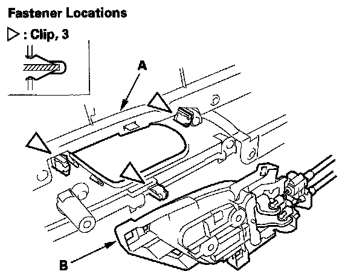
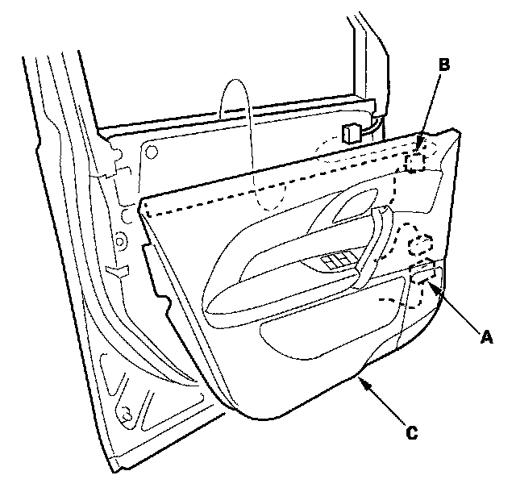

Front Door Panel: Service and Repair
Front Door Panel Removal/InstallationSpecial Tools Required
KTC trim tool set SOJATP2014 *
Trim pad remover. Snap-on A 177A or equivalent, commercially available
* Available through the American Honda Tool and Equipment
NOTE: Use the appropriate tool from the KTC trim tool set to avoid damage when removing components.
1. Using a trim tool, push on the upper hook (A) and pivot the inner handle cap (B) on the bottom hooks (C), then remove the cap and the screw securing the inner handle (D).

2. Pry out the bottom edge of the grip cover (A) at the notches with the trim tool to detach the clips and to release the hooks (B). Then remove the cover.
3. Remove the screws.
4. Remove the door panel (A) with as little bending as possible to avoid creasing or breaking it.
1. Start at the bottom edge of the door panel, release the clips with a commercially available trim pad remover.
2. Detach the upper clips.
3. Starting at the rear, pull the door panel upward.
NOTE: The inner handle cable (B) and latch cable (C) are connected to the inner handle (D). Do not pull the door panel up too far, or these cables will be damaged.

5. While holding the door panel (A) away from the door, remove the inner handle (B) from the door panel by detaching the clips.

6. Disconnect the door subharness connector (A) and power mirror switch connector (B), then remove the door panel (C).

7. Remove the latch cable fastener (A) from the inner handle (B), and then disconnect the latch cable (C) from the cable fastener (D). Disconnect the inner handle cable (E) from the cable fastener (F), then remove the inner handle.
NOTE: Check if the cable fasteners are damaged or stress-whitened.
8. Disconnect the power window switch connector (A), and on the driver's side, disconnect the power door lock switch connector (B) and the seat position memory switch connector (C).
9. Remove the screws, then remove the grip (A), armrest assembly (B), armrest cover (C), and the wood trim (D) from the door panel (E).

10. Remove the screws (A, B), then separate the armrest (C), the power window switch panel (D), and the power window switch (E).
11. Install the door panel in the reverse order of removal, and note these items:
- If the clips are damaged or stress-whitened, replace them with new ones.
- Replace any damaged cable fasteners with new ones.
- The latch cable (A) should be fixed to the cable fastener (B) with the latch in the unlocked position as shown.
- Make sure the connectors are plugged in properly, and the cables are connected securely.
- Make sure the window and power door lock operate properly.